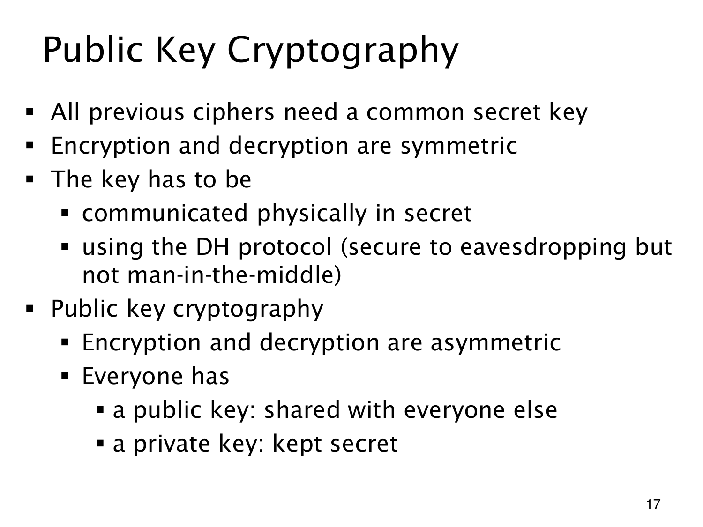

L1.14 · 第 17 页讲解原文
查看这一页课件

接收者公开加密信息，保留解密信息
public key cryptography（公钥密码）采用 asymmetric（非对称）的密钥结构。接收者将 public key（公钥）分发给其他人，private key（私钥）只由自己保留，后面的 RSA 会用模幂实现这种分工。
发送者用接收者的公钥加密，接收者用自己的私钥还原。发送者无需先取得对方的秘密；安全目标是在公钥和密文已知时，仍难恢复私钥或明文。
相比之下，前面的对称密码依靠共同秘密参与加密与解密。这个秘密要预先分发，或通过密钥交换建立。页上的实体传递与未经认证的 DH 是前文背景，并没有列尽所有方案。
公钥可以公开，身份归属仍需认证。若攻击者递来自己的公钥并冒充接收者，发送者就可能把消息加密给攻击者；不能因某个值叫“公钥”就接受它属于声称的那个人。